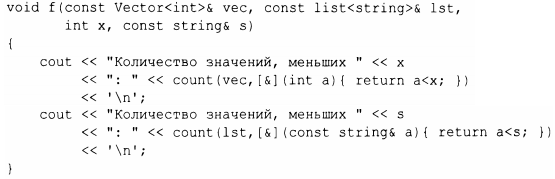
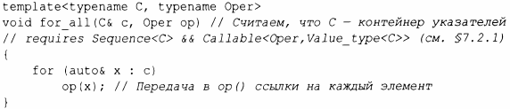
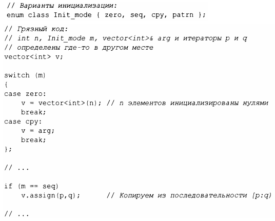

⇐6.3.2 Функциональные объекты 6.4 Шаблонные механизмы⇒
В §6.3.2 мы определили Less than отдельно от его использования. Это может быть неудобно, а потому в языке имеется возможность записи неявного создания функциональных объектов:
Запись [&] (int а) {return а<х;} называется лямбда-выражением. Оно генерирует функциональный объект точно так же, как и Less than<int> {х} . Конструкция [&] представляет собой список захвата, указывающий, что локальные имена, используемые в теле лямбда-выражения (такие, как х), будут досrупны по ссылке. Для того чтобы "захватить" только х, мы можем сделать следующее: [&х] . Если мы хотим передать генерируемому объекrу копию х, то для этого должны использовать запись [=х] . Запись [] указывает, что не захватываются никакие локальные имена; запись для захвата всех локальных имен по ссылке - [&] , а запись для захвата всех локальных имен по значению - [=] .
Использование лямбда-выражений может быть удобным и кратким, но одновременно и неясным. Для нетривиальных действий (скажем, более чем для простого выражения) я предпочитаю именовать операцию, чтобы более четко изложить ее цель и сделать ее досrупной для использования в нескольких местах программы.
В §4.5.3 мы отметили раздражение из-за необходимости писать множество функций для выполнения операций над элементами векторов указателей и unique_ptr, таких как draw_all () и rotate_all ().Функциональные объекты (в частности, лямбда-выражения) могут помочь нам, позволяя отделить обход контейнера от указания того, что должно быть выполнено с каждым элементом.
Во-первых, нам нужна функция, применяющая операцию к каждому объекrу, на который указывают элементы контейнера указателей:
Теперь мы можем написать версию user () из §4.5 без создания множества функций _all:
Я передаю в лямбда-выражение unique_ptr<Shape>&, так что функция for_all () не должна заботиться о том, как именно хранятся объекты. В частности, вызовы for_all () не влияют на время жизни переданных Shape, а тела лямбда-выражений используют аргумент так же, как если бы он был простым указателем.
Как и функция, лямбда-выражение может быть обобщенным. Например:
Здесь, как и в объявлениях переменных, auto означает, что в качестве инициализатора принимается любой тип (аргумент рассматривается как инициализирующий формальный параметр в вызове). Это делает лямбда-выражение с параметром auto шаблоном, обобщенным лямбда-выражением. По причинам, затерявшимся где-то в комитетах по стандартизации, такое использование а и to в настоящее время не допускается для аргументов функций.
Мы можем вызывать такую обобщенную функцию rota te_and_draw () с любым контейнером объектов, для которых допустимы draw() и rotate(). Например:
Используя лямбда-выражение, можно превратить любую инструкцию в выражение. В основном это используется для предоставления операций для вычисления значения в качестве аргумента, но эта способность является более общей. Рассмотрим сложную инициализацию:
Это стилизованный пример, но, к сожалению, не атипичный. Нам нужно выбрать один из множества вариантов инициализации структуры данных (здесь v) и нам нужно делать разные вычисления для разных вариантов. Такой код часто беспорядочен и является источником ошибок:
Этот код можно превратить в лямбда-выражение, используемое в качестве инициализатора:
Я все еще "забыл" case, но теперь это легко заметить.